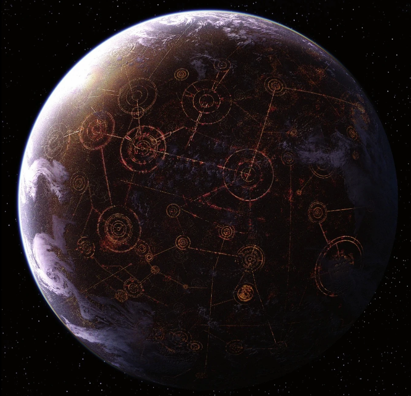

Me llamo Ashoka Tano soy una Togruta ex-aprendiz del templo jedi de Corusant nacida en el planeta Shili, llevo estudiando la fuerza desde que tengo uso de memoria y mi desnpeño como jedi defendiendo la Republica con mi maestro Anakin y mi legio de clones la 501th ha sido excepcional
Me considero una persona muy valiente y decidida, siempre dispuesta a ayudar a los demás y a luchar por la justicia y la paz en la galaxia
Fecha de nacimiento: 36 BBY
Correo: ashoka.Tano@coruscant.rep
Linkedin: ashoka.Tano.Linkedin
Planeta Natal: Shili
Planeta actual de residencia: Coruscant
Establecimiento actual: Coruscant, Portal del inframundo Nivel 1313, Taller de las Hermanas Martez
Holocomunicador(ACTUAL): 6(66)644-52-24
“Ahsoka, within you will be everything I am. All the knowledge I possess. Just as I inherited from my master, and he, from his.” -Anakin Skywalker
“A great leap forward often requires first taking two steps back.” -Obi-Wan Kenobi
“In the end, cowards are those who follow the dark side.” -Yoda
“In My Book, Experience Outranks Everything.” -Capitan Rex